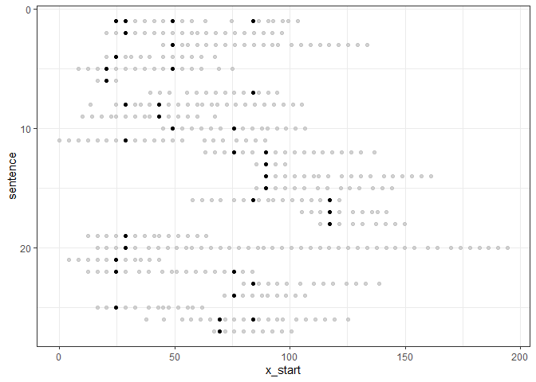
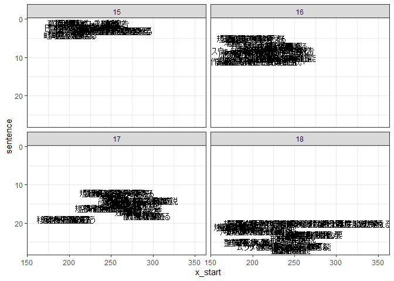

The goal of anabass is to analyse basic structure of sentences for better writeings.
anabass is from a name of fish ginus anabas. anabas was is thought to climb tree, but not in actual.
Installation
You can install the development version from GitHub with:
# install.packages("remotes")
remotes::install_github("matutosi/anabass")Example
You can use fun() to analyse basic structure.
library(anabass)
#>
#> Attaching package: 'anabass'
#> The following object is masked from 'package:stringr':
#>
#> sentences
library(dplyr)
library(ggplot2)
devtools::load_all(".")
#> ℹ Loading anabass
library(moranajp)
review_sentences <-
review_chamame |>
unescape_utf() |>
add_sentence_no() |>
clean_up() |>
dplyr::filter(chap == 5) |>
dplyr::select(sentence, word = "\u539f\u5f62") |>
dplyr::filter(word != "") |>
dplyr::group_by(sentence) |>
dplyr::summarise(word = reduce(word, paste, sep = ";")) |>
`$`(_, "word") |>
stringr::str_split(";")
df <- connect_sentences(review_sentences)
df |>
ggplot2::ggplot(ggplot2::aes(x = x_start, y = sentence, label = word)) +
ggplot2::geom_point() +
gghighlight::gghighlight(highlight == TRUE, label_key = word) +
ggplot2::scale_y_reverse() +
ggplot2::theme_bw()
#> Too many data points, skip labeling
df <-
review_chamame |>
unescape_utf() |>
dplyr::filter(chap == 5) |>
add_sentence_no() |>
dplyr::distinct(sect, para, sentence) |>
dplyr::right_join(df)
#> Joining with `by = join_by(sentence)`
df |>
ggplot2::ggplot(ggplot2::aes(x = x_start, y = sentence, label = word)) +
ggplot2::geom_text() +
ggplot2::scale_y_reverse() +
ggplot2::theme_bw() +
ggplot2::facet_wrap(vars(para))
Citation
Toshikazu Matsumura (2024) anabass: Analyse Basic Structure of Sentences for Better Writing. https://github.com/matutosi/anabass/.